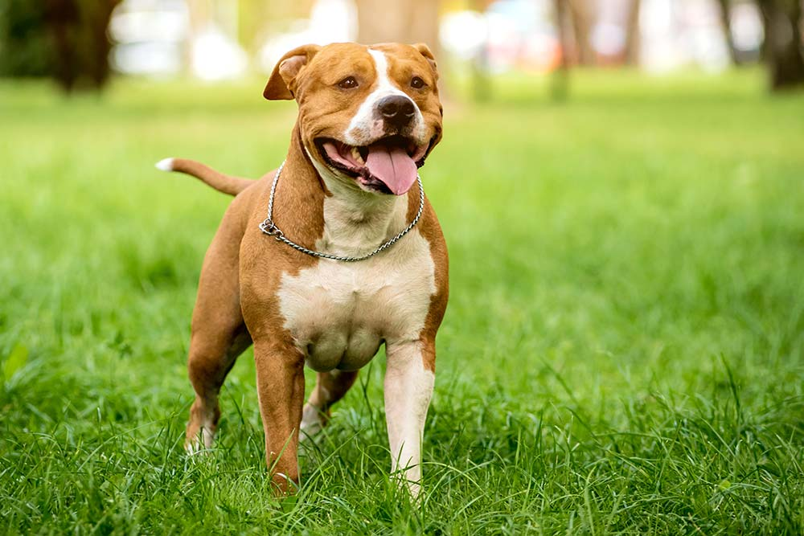
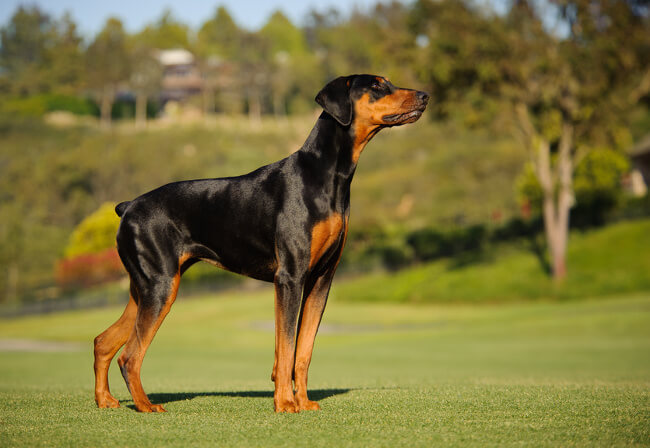

es una raza de perro originaria de Estados Unidos, que surgió a partir de la raza de los bull-and-terriers, importados desde el Reino Unido en el siglo XIX.[] Se utilizaban como perros de pelea hasta que estos eventos fueron prohibidos en 1976. Actualmente son criados como mascotas y atletas en deportes legales

El dóberman es una raza de perro de origen alemán Actualmente sus principales funciones son: perro policía, perro militar, perro de defensa y seguridad, perro guardián, entre otras funciones

El husky siberiano es una raza de perro de trabajo originaria del norte de Siberia en Rusia. Este perro fue creado por la tribu Chukchi como perro de trabajo para tirar de los trineos a través de largas distancias durante sus partidas de caza